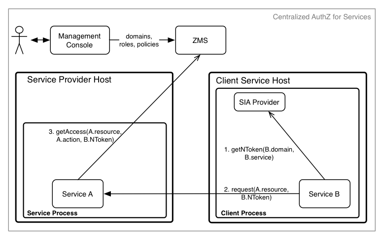

Go Client/Server Example - Centralized Access Control
- Required Components
- Service Definition
- Resource Definition
- Athenz Management Setup
- Code Changes
- Deploying Example Servlet
- Test Cases
In the centralized access control model, the service as a principal requests its NToken from SIA Provider and then presents it to the target service which would perform an identical check with ZMS to confirm access.

The required steps to setup the environment for provider and tenant services to support centralized access control are as follows:
- System administrator creates the provider and tenant domains.
- Tenant Domain administrator generates a public/private key pair and registers a service in its domain.
- Provider Domain administrator creates a role and policy that grants access to the given role with configured action and resource.
- Provider Domain administrator adds the Tenant Service to the role to grant access.
- Tenant Domain administrator installs the private key on the host that will be running the client/tenant service.
Required Components
To support centralized access control in your applications, you only need to install and configure the Athenz ZMS server along with the Athenz UI. Please follow these guides to make sure you have both of those components up and running in your environment:
To build the client and server components of this example, you need to download and install Go and Git client if you don't already have these available on your box:
Make sure your GOPATH variable is set and the PATH variable includes the $(GOPATH)/bin to run the utilities.
Service Definition
Let's first define our service that needs to be Athenz protected. We have a simple recommendation service that returns either a movie or tv show for the caller. It has two endpoints:
GET /rec/v1/movie GET /rec/v1/tvshow
So in this first release we just want to protect access to these endpoints. The traffic is very low - we only expect a couple of requests an hour so we have decided to use Athenz' centralized authorization model.
Resource Definition
Defining resources and actions the principals are authorized to execute is one of the most important tasks in the authorization process. Based on our endpoints, it's expected that we'll have 2 general resources:
movie tvshow
The resources are referenced in their own domain namespace. So those are valid if your domain is specifically created to support this recommendation service only. But's lets assume we might add rental support later, so we need to make sure the policies are based on service specific resources. So we'll define our resources as:
rec.movie rec.tvshow
Support action for these resources would be read. We can extend
our authorization policies later on if we need to introduce other
actions - such as write or list as we add more functionality into
our service.
Athenz Management Setup
Once we have defined what our resources and actions are, we can create their respective client and server (also commonly referred as tenant and provider) roles and policies in Athenz. Go to Athenz UI and login with your account which should have system administrator access. Follow the instructions in the following guide to setup the required access control:
Code Changes
Both the client and server implementors need to make changes in their respective code bases to support centralized authorization checks. The client needs to make sure to submit its service identity as part of its request, while the service needs to carry out the authorization check based on that service identity to determine if it request should be processed or not.
Client Changes
While we'll use the curl client to make the http calls
to our example service, we provide a sample client code
that utilizes our zmssvctoken go library to generate
service identity tokens. The full client source code is
available from:
https://github.com/yahoo/athenz/blob/master/utils/zms-svctoken/zms-svctoken.go
Client Import Dependency Update
First you need to update your go client to import the zms service token library.
import ( "github.com/yahoo/athenz/libs/go/zmssvctoken" )
Obtaining NTokens
The domain administrator must have already generated a public/private key pair for the service and registered public key in Athenz. The private key must be available on the host where the client will be running.
// load private key bytes, err := ioutil.ReadFile(privateKeyFile) if err != nil { log.Fatalln(err) } // get token builder instance builder, err := zmssvctoken.NewTokenBuilder(domain, service, bytes, keyVersion) if err != nil { log.Fatalln(err) } // set optional attributes builder.SetExpiration(60 * time.Minute) tok := builder.Token() // get a token for use ntoken, err := tok.Value()
Once we have our ntoken value, the http client before contacting the
provider service needs to add it as the value for the Athenz-Principal-Auth
header:
req, err := http.NewRequest("GET", "http://recommend-host/rec/v1/movie", nil) // ... req.Header.Add("Athenz-Principal-Auth", ntoken)
Build Go zms_svctoken Client Utility
To download, compile and install zms_svctoken utility, execute the following command:
$ go get github.com/yahoo/athenz/utils/zms-svctoken/...
Server Changes
The full server source code is available from:
https://github.com/yahoo/athenz/tree/master/examples/go/centralized-use-case/server
Server Import Dependency Update
First you need to update your go client to import the zms client library.
import ( "github.com/yahoo/athenz/clients/go/zms" )
Authorization Checks
Before any authorization calls, we're going to check to make sure our request contains the Athenz principal token:
const authHeader = "Athenz-Principal-Auth" func movieHandler(w http.ResponseWriter, r *http.Request) { // first let's verify that we have an ntoken if r.Header[authHeader] == nil { http.Error(w, "403 - Missing NToken", 403) return } ... } }
Next, the most important part is to determine the resource and action based on the given http request. Since we have a separate handler for each endpoint:
http.HandleFunc("/rec/v1/movie", movieHandler) http.HandleFunc("/rec/v1/tvshow", tvshowHandler)
each function knows exactly what the resource and the action is. Finally, we are going to contact ZMS for the authorization check.
func movieHandler(w http.ResponseWriter, r *http.Request) { ... // let's generate our resource value which is the // <provider domain>:<entity value> resource := providerDomain + ":rec.movie" // let's check with ZMS if the principal is authorized if !authorizeRequest(r.Header[authHeader][0], resource, "read") { http.Error(w, "403 - Unauthorized access", 403) return } io.WriteString(w, "Name: Slap Shot; Director: George Roy Hill\n") } func authorizeRequest(ntoken, resource, action string) bool { // for our test example we're just going to skip // validating self-signed certificates tr := http.Transport{} config := &tls.Config{} config.InsecureSkipVerify = true tr.TLSClientConfig = config zmsClient := zms.ZMSClient{ URL: zmsUrl, Transport: &tr, } zmsClient.AddCredentials(authHeader, ntoken) access, err := zmsClient.GetAccess(zms.ActionName(action), zms.ResourceName(resource), "", "") if err != nil { fmt.Println("Unable to verify access: %v", err) return false } return access.Granted }
Build Server
Checkout and build the server component:
$ go get github.com/yahoo/athenz/examples/go/centralized-use-case/server
Deploying Example Server
To run the Go server, you just need to specify the ZMS Server url. The server listens on port 8080:
$ recommend -zms https://<zms-server>:4443/zms/v1
Test Cases
Run the following test cases to verify authorization access for specific services. We're running our go server on the local box so we're using localhost as the hostname.
- The zms_svctoken utility should already be built and installed on your host. cd to the directory that includes the private keys for the test services we created in the section Athenz Management Setup above.
Invalid Access Without ServiceToken
For this test case we'll just use the curl client directly:
$ curl http://localhost:8080/rec/v1/movie
403 - Missing NToken
Movie Editor Access
Movie service can successfully access /rec/v1/movie endpoint. So let's first generate an NToken for this service and then contact our server:
$ export NTOKEN=`zms_svctoken -domain editors -service movie -private-key movie_private.pem -key-version v0` $ curl -H "Athenz-Principal-Auth: $NTOKEN" http://localhost:8080/rec/v1/movie Name: Slap Shot; Director: George Roy Hill
Movie service does not have access to /rec/v1/tvshow endpoint:
$ export NTOKEN=`zms_svctoken -domain editors -service movie -private-key movie_private.pem -key-version v0` $ curl -H "Athenz-Principal-Auth: $NTOKEN" http://localhost:8080/rec/v1/tvshow 403 - Unauthorized access
TvShow Editor Access
TvShow service can successfully access /rec/v1/tvshow endpoint. So let's first generate an NToken for this service and then contact our server:
$ export NTOKEN=`zms_svctoken -domain editors -service tvshow -private-key tvshow_private.pem -key-version v0` $ curl -H "Athenz-Principal-Auth: $NTOKEN" http://localhost:8080/rec/v1/tvshow Name: Middle; Channel: ABC
TvShow service does not have access to /rec/v1/movie endpoint:
$ export NTOKEN=`zms_svctoken -domain editors -service tvshow -private-key tvshow_private.pem -key-version v0` $ curl -H "Athenz-Principal-Auth: $NTOKEN" http://localhost:8080/rec/v1/movie 403 - Unauthorized access
Site Editor Access
Site service has access to both /rec/v1/tvshow and /rec/v1/movie endpoints:
$ export NTOKEN=`zms_svctoken -domain editors -service site -private-key site_private.pem -key-version v0` $ curl -H "Athenz-Principal-Auth: $NTOKEN" http://localhost:8080/rec/v1/movie Name: Slap Shot; Director: George Roy Hill $ curl -H "Athenz-Principal-Auth: $NTOKEN" http://localhost:8080/rec/v1/tvshow Name: Middle; Channel: ABC
Other Test Cases
Now you can modify the movie_editos, tvshow_editors, and site_editors roles
in the recommend domain to add and remove the defined services and then
run the corresponding test cases to verify your access change.